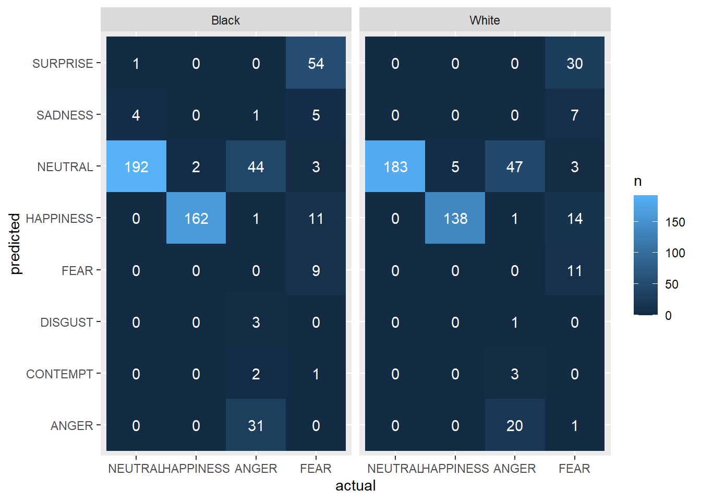
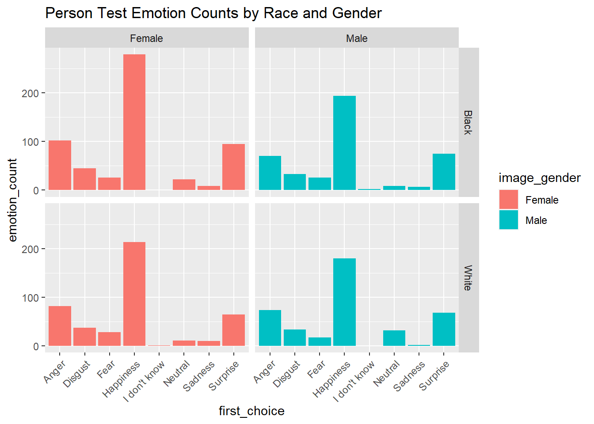
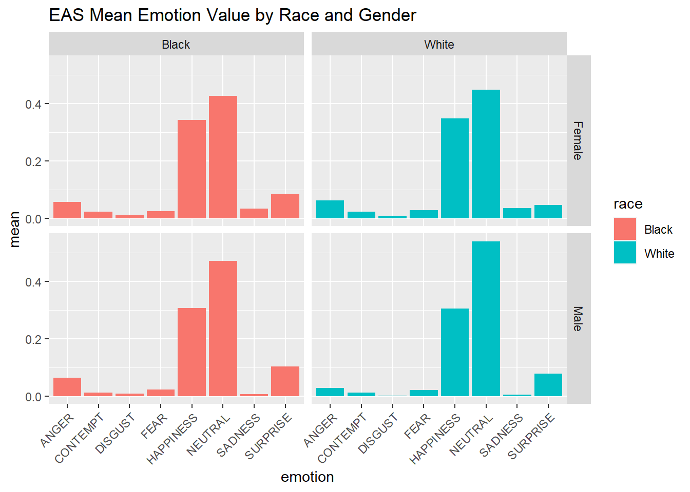

Project on Image Tagging Bias
Report
Introduction
In the age of AI and machine learning, vision-based cognitive services (CogS) have become integral to a wide array of applications, such as real-time security, social networks, and smartphone apps. As these services heavily rely on analyzing images of people and inferring emotions from facial expressions, it is crucial to examine their potential biases and ensure that they do not inadvertently perpetuate racial stereotypes.
We investigated if there is an inherent racial bias in image tagging emotion analyses services in their reading of emotions as compared to a real person reading emotion. We also wanted to know if this corroborates any previous research on the bias towards black individuals erroneously being perceived as angry or hostile through their expressions.
Upon analysis, we did not find any significant differences. However, we believe that the lack of significant findings may be due to issues with the dataset, warranting further exploration. Our report underscores the importance of rigorously examining potential biases in AI systems and highlights the need for more robust datasets and research methods to better understand and address these biases. While our current findings may not conclusively prove the existence of inherent biases in EAS, the study emphasizes the ongoing need for continuous evaluation and improvement of AI systems to ensure fairness, transparency, and accuracy in AI applications, ultimately contributing to a more ethical and inclusive technological landscape.
Data description
In our study, we analyzed two datasets to investigate the presence of inherent bias in emotion analysis services (EAS) taken from the Harvard Dataverse.
The person-data dataset contains human-generated data collected from participants in the US. Each row represents a different individual tasked with describing the facial emotion of a person in a photograph. The columns include information about the evaluator, such as the date and time of evaluation, the participant’s location (city and state), IP address, and demographic information (race and gender). Additionally, the dataset contains columns for the evaluator’s first and second choices of emotion to describe the person in the photo, the emotion they would not use, and the image identifier.
The EAS dataset comprises data generated by the emotion analysis services. Each row represents a unique image, and the columns contain the proportion of evaluators who classified the emotion expressed in the picture across seven different emotions. The first column provides the image identifier, while the subsequent columns display the proportions for the emotions Neutral (N), Happiness, Sadness, Surprise, Fear, Disgust, and Anger.
(Kyriakou, Kyriakos; Kleanthous, Styliani; Otterbarcher, Jahna; Papadopoulos, George, 2021, “Emotion Bias Dataset (EBD)”, https://doi.org/10.7910/DVN/8MW0RA, Harvard Dataverse, V1, UNF:6:axjl4xEJLBvYutu0VQ0pMQ== [fileUNF] )
Cleaned dataset contains information about emotions, race, and gender of 1208 individuals.
Emotions of interest include SADNESS, NEUTRAL, ANGER, FEAR, and HAPPINESS.
Emotions are represented as percentages of the total emotional response, with values ranging from 0 to 1.
Race is represented as a categorical variable, with the category from White, Black, Latino, Asian.
Gender is also represented as a categorical variable, with the only category being Male and Female.
Data analysis
Before continuing with the data analysis, it is important to highlight some potential issues in the data collection which may then lead to issues with the conclusions.
preds
ANGER CONTEMPT DISGUST FEAR HAPPINESS NEUTRAL SADNESS SURPRISE
A 51 5 4 0 2 91 1 0
F 1 1 0 20 25 6 12 84
HC 0 0 0 0 146 7 0 0
HO 0 0 0 0 154 0 0 0
N 0 0 0 0 1 591 4 1As you can see here, the emotion categories are slightly inconsistent in the dataset. The actual emotions in the row labels don’t exactly match up with the predicted emotions in the column labels. The options for actual are anger, fear, happy closed, happy open, and neutral. On the other hand, the option for the predicted are anger, contempt, disgust, fear, happiness, neutral, sadness, and surprise. This makes analyzing the data and making proper comparisons slightly more difficult and less straight forward.
# A tibble: 4 × 2
race `mean(accuracy)`
<chr> <dbl>
1 Asian 1
2 Black 0.749
3 Latino 0.991
4 White 0.759 race actual n
1 Asian NEUTRAL 109
2 Black NEUTRAL 197
3 Black HAPPINESS 164
4 Black ANGER 82
5 Black FEAR 83
6 Latino NEUTRAL 108
7 White NEUTRAL 183
8 White HAPPINESS 143
9 White ANGER 72
10 White FEAR 66The tables above show another potential issue in the dataset. In the first table, you can see that the mean accuracy for the Asian and Latino race categories are suspiciously higher which requires further exploration. In the following table, one can observe that the reasoning for this is that for both categories, the only actual emotion option was “neutral”. This may create bias in the analysis, so for this reason we decided to only compare the Black and White race categories.

In the heat maps above, each tile represents a unique combination of “predicted” and “actual” for a specific race (“Black” or “White”), and the color of the tile represents the count of that combination. The plot is divided into separate panels for each race. As we can see, the counts do not really show anything alarming. For Black, neutral is occasionally confused for neutral, and for both races anger is often confused with neutral. Fear is also confused with surprise for both races.

This visualization uses a bar graph to show the distributions for emotion counts from the person data for black compared to white. There seems to fairly similar distributions between the two races, with slightly higher counts for surprise, happiness, and anger for black women compared to white. However, this does not raise much concern since two out of these three emotions are percieved as positive.

This visualization uses a bar graph to show the distributions for emotion counts from the EAS data for black compared to white. Again, there does not seem to be any alarming differences although we need to conduct tests to confirm this. There does not appear to be a significant difference in any of the emotion rating means when comparing black to white.
Evaluation of significance
Hypothesis 1
Null Hypothesis: There is no statistically significant difference between actual and predicted categories for race.
\[ H_0: p_1 - p_2 = 0 \]
Alternative Hypothesis: There is a statistically significant difference between actual and predicted categories for race.
\[ H_A: p_1 - p_2 \neq 0 \]
category statisitcs pvalue
1 NEUTRAL 4.7065990 0.09505501
2 HAPPINESS 0.9025027 0.34211153
3 ANGER 4.0391307 0.54379596
4 FEAR 7.9138975 0.24447953The output shows the results of the Chi-squared tests for the EAS data. Each row corresponds to a unique category in the actual column (‘NEUTRAL’, ‘HAPPINESS’, ‘ANGER’, ‘FEAR’), and the columns display the Chi-squared statistic and the associated p-value. All of the p-values are greater than 0.05, suggesting that there is not enough evidence to reject the null hypothesis of independence for any of the emotion categories. There is not enough evidence to support that there is a statistically significant difference between actual and predicted categories for race for any emotion in the EAS data.
Hypothesis 2
For our first hypothesis, we wanted to determine if there was a significantly higher proportion of “false positive” angry decisions made by the Emotion Analysis Service as compared to real people making the same decisions.
Null Hypothesis: There is not a significantly higher proportion of “false positives” for incorrect angry decisions made by the EAS for black men as compared to real people making the decision
\[ H_0: p_1 - p_2 = 0 \]
Alternative Hypothesis: There is a significantly higher proportion of “false positives” for incorrect angry decisions made by the EAS for black men as compared to real people making the decision.
\[ H_A: p_1 - p_2 \neq 0 \] For this, we used a difference in proportions test in order to find out if there was a significant staitistical difference between the EAS and person type 1 errors. Our results was as shown below:
2-sample test for equality of proportions with continuity correction
data: c(length(type1_eas), length(type1_person)) out of c(length(eas_data_clean), length(person_data_clean))
X-squared = 0.15476, df = 1, p-value = 0.694
alternative hypothesis: two.sided
95 percent confidence interval:
-0.6094210 0.3017287
sample estimates:
prop 1 prop 2
0.3846154 0.5384615 For our hypothesis test, we receive a p-value of 0.694, indicating that we fail to reject the null hypothesis. With a threshold of p < 0.05, we can conclude that there is no significant difference in the type 1 errors of the EAS and people’s decisions when it comes to classifiying black men as angry.
Interpretation and conclusions
Based on the results obtained from the two-sample test, we observe a p-value of 0.694, exceeding the conventional significance threshold of 0.05. This suggests insufficient evidence to reject the null hypothesis, which posits that there is no inherent racial bias in Emotion Analysis Services’ (EAS) interpretation of emotions, compared to human evaluation. The 95% confidence interval for the difference in proportions is -0.5678590 to 0.4000268, which encompasses 0. This lends further weight to our conclusion, suggesting with 95% confidence that the true difference in proportions between the two groups falls within this interval, and therefore there is not a significant divergence in Type I error rates between the groups.
The Chi-squared tests performed for the second hypothesis further corroborate our conclusions. With p-values exceeding the alpha level of 0.05 for each emotion, we fail to reject the null hypothesis that there is no statistically significant difference between the actual and predicted categories for race across all emotions in the EAS data. This aligns with our earlier findings, suggesting a lack of inherent racial bias in EAS’s emotion interpretation.
However, it is paramount to acknowledge the potential limitations of our dataset, such as the under-representation of the Asian and Latino demographics and inconsistencies in the emotion variables. Such factors could potentially confound our analysis and merit further exploration.
Looking ahead, future work should aim to address these limitations. In particular, efforts should be directed towards compiling a more diverse and representative dataset. This would involve not only including more data from underrepresented racial groups but also ensuring that the range of emotions captured is comprehensive and consistently categorized. Furthermore, using a variety of statistical tests and machine learning models could provide a more robust analysis of potential biases. We also recommend performing longitudinal studies to track how the performance of these services evolves over time, as the algorithms learn and adapt.
While our findings do not conclusively indicate the presence of inherent racial bias in EAS, they underscore the importance of continuous evaluation and vigilance. This is crucial in ensuring that as these systems evolve, they do so in a manner that is fair, transparent, and accurate, contributing to an ethical and inclusive technological landscape.
Limitations
There are potential limitations based on the research design:
- There is under-representation of the Asian and Latino demographics and inconsistencies in the emotion variables. This could potentially confound our analysis and merit further exploration.
- Inconsistency in the emotion variables; the predicted and accurate options are not the same, potentially confounding our analysis.
- The sample sizes (1207-1845 observations) used for the analysis may be too small to generalize conclusions about the population. This might lead to the sample that is not representative of the larger population.
- The study relies heavily on the accuracy of the image tagging and emotion analysis services used. If these services are flawed, the results of the study may be inaccurate or unreliable.
- The study is limited to the direct emotion variables included in the analysis. There may be other factors that influence emotion recognition that are not accounted for in the study, such as the lighting and picture quality.
- Bias could exist, but could be the same for both the EAS and real decisions as the service could be trained on biased data which would also result in no statistical difference.
Acknowledgments
The heat-map was inspired by material from “Intro to ML - INFO 1998” taught by the Cornell Data Science project team.